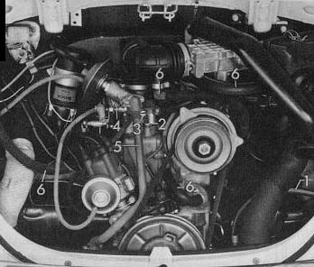
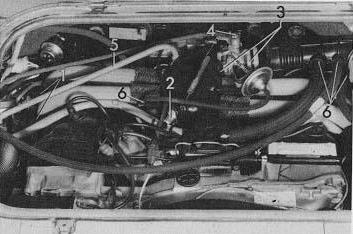

Leaks in air intake system
Possible sources on type 1 engines:

Possible sources on type 2 engines:

-
Intake pipes on cylinder heads
-
Cold start valve on intake air distributor
-
Connections between throttle valve housing/intake air distributor
-
Throttle valve shaft
-
Injector seal leaking
-
Hose connections
Idling still
irregular
Idling OK